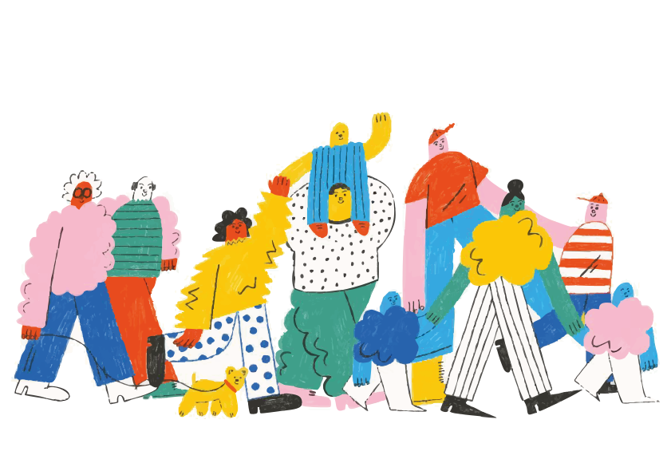

"Un pequeño gesto puede salvar miles de vidas"
Cada donación tiene el poder de cambiar una vida. Descubre cómo puedes transformar el miedo en esperanza, la duda en acción. Aprende qué puedes donar, dónde y cómo hacerlo, y únete a miles de personas que ya han decidido que la vida de otro merece seguir. Tu gesto importa, y aquí te mostramos cómo hacerlo realidad.
Últimas Noticias
Donaciones
Sangre
Médula ósea
Órganos
Leche materna
Cordón umbilical
Contacto
Email: contacto@vidar.org
Teléfono: +34 600 123 456
Dirección: Calle Salud 45, Barcelona